PROSPER / 保持字面保真的商品搜索稀疏召回
Hongru Song、Yu-An Liu、Ruqing Zhang、Jiafeng Guo、Maarten de Rijke、Sen Li、Wenjun Peng、Fuyu Lv 和 Xueqi Cheng 研究商品搜索首阶段的词项级稀疏检索。一作署名中国科学院计算技术研究所和中国科学院大学，合作机构包括阿姆斯特丹大学及淘宝天猫集团。2026 年 11 月 21 日提交初版，11 月 24 日列入 arXiv 公告。论文首页列 WSDM 2027 和 DOI，Crossref 查询当时返回 404，正式会议状态待独立核验。未核验到独立源码。离线试验比较两套中文商品检索数据，作者还在工业多通道系统中测试增加单路稀疏召回后的业务变化。arXiv:2611.28645
商品首阶段检索要在服务效率约束下覆盖尽可能多的相关候选。短查询和商品标题常使用不同词汇，语言模型的扩展可以补上语义连接，却可能压低品牌和型号等决定搜索意图的字面信号。大词表又让短文本的稀疏表示难以稳定训练，这两个问题需要分别解决。
1. 背景和问题
商品搜索的一阶段召回决定后续相关性排序和个性化排序能看见哪些商品。用户输入往往是连排关键词，顺序、缩写和分词形式会变，重要属性却很紧凑。以论文的车辆配件查询为例，主体品类能圈出滤芯，品牌车型才能缩小安装兼容范围，品类相同而车型不符仍会让用户拿到错误商品。商品标题同样偏向把品牌、品类和多个属性堆在一起，常会用另一个商家使用的术语、不同语言的品牌名、翻译写法或更长的同义搭配。爱立舍机油滤芯和一种确实兼容的配件未必共享原始词项，按字面完全匹配会牺牲召回。词表扩展可以把相近表达映射到同一坐标，但覆盖品类的高频扩展还容易淹没那个区分具体车型的稀有字面词。
这个需求与篇章检索中的词权分配有联系，两类输入的统计结构不同。长篇内容中的一些常用词重复出现，词权模型能从较完整上下文估计关键词，抑制普通叙述词以后常常仍有多种描述可命中。同一商品的查询很短，用户每多写一个词都可能在给相同类别加场景、型号、材质或者适用范围。对商品标题而言，某条查询暂时用不到的词又可能是下一条查询关注的属性。两侧的目标因此有实际差异，查询需要先让区分当前意图的词争取有限权重，商品则需要保留能被不同查询用来命中的信息。一刀切地处理含量和词权会把两侧的职责混在一起，也会让末端的排序系统承担本可由召回层避免的大量同类误召。
传统倒排以词项为索引键，分数能追溯到词项命中，规模条件下也有成熟的倒排表剪枝。BM25 用词频、逆文档频率和长度相关项衡量重叠，一个在标题里罕见的产品代号可以做强证据。不过 BM25 看见的仍是指定分词器产出的词项，改写、语义漂移和标题中省略原词都会改变重叠。密集双塔可以把查询和商品分别压成连续向量，再用点积和 ANN 把文本无直接重叠的配件拉进候选。如果两个配件的大多数词都是同类术语，连续空间也可能让弱语义差异占优势，且单一向量分数无法直接定位哪几个词带来召回。工业系统往往并行用多路保障候选的互补性，PROSPER 的部署场景正是追加一个可解释的词项通道。
学习型稀疏检索把语言模型放在索引前。SPLADE 用掩码语言模型把每个输入位置投影到整套词表，对激活做截断和压缩，再沿序列对每个词独立取最大值。这样即使某个词没有原样出现，只要模型从上下文预测它对文本有用，仍能为该词分配权重。查询和商品各自编码，匹配可继续用共同活跃词的加权点积。这个设计在开放语料检索上已有成熟基线。论文在 Multi-CPR 电商集上给出的 BERT SPLADE-v2 Hit@1000 是 89.6%，DPR 是 92.1%，而文中所举 MS MARCO 超过 96% 属于另一套任务。跨数据集差异同时受标注、候选规模和测试难度影响，不能把差值直接归于架构。可比证据来自同一数据上的一组基础与加强对照。
把骨干更换为 Qwen2.5-3B 后，同表所列基础稀疏变体 Hit@1000 增至 91.3%，输入重复版本达到 92.4%。增强语义建模有帮助，但前部命中仍弱，说明仅扩大模型容量还未处理原词地位。因果阅读使较早位置只能看到前缀，给最大池化带来字词局部激活主导全句表示的可能。重复输入或增加双向可见性改善了表示的全句条件，却也可能强化错误的近义关联。另一个选择是直接从末位隐藏态读取整句信息，再分别审视模型想向词表扩什么、每个原词需要配多少权重。字面与扩展仍共用同一套词表坐标，倒排不必为了两类信号另建一种检索机制。
原词偏弱和不相关扩展是两种相关的错误。论文表中的老捷豹副水箱触发一组动物词，是模型可以在语言上展开却认错域的例子。爱立舍机油滤芯的普通配件词高度活跃，则说明模型即使理解大类，也可能没把专用品牌放到足够优先的位置。原词加权对后一类错误提供更直接的纠偏，对前一类主要改变同一评分里的相对竞争。本文的残差没有直接对每个非字面维度加布尔过滤，因而模型仍能保留确实对配件检索有益的发动机或保养相关扩展。反过来，若同一字面子词含义不稳定或只是品牌切分后的常见片段，仅凭进入掩码仍不足以推出强约束，最终需要通过正负配对将词权分开。
稀疏意味着实际输出只在词表上少数方向活跃，与编码器隐状态尺寸是两个概念。Qwen2.5 的词表超过十五万坐标，而 Table 2 所示两个测试集的平均查询只有五或六个模型词项，商品标题均值约二十五个。预训练的语言建模头允许数万个候选坐标先出现正激活，在这样的初态把相似度交给所有维度后，优化既要挤掉不相关坐标，又要给短文本学到关键重叠。连续稀疏正则能慢慢压低高频激活，早期的大支撑却会把更新分散到大批弱候选。本论文加入的词汇预选窗只在支撑过大时进行离散截断，让监督较早集中于有限竞争集合，再由持续的软正则细化词分布。
评价时还需要说明标签能回答什么。公开 Multi-CPR 报告命中率，正确目标只要出现在前若干位就能使这条查询命中，增加深度可以隐藏第一条正确结果被挤到后面的代价。内部数据允许每个查询拥有多个点击商品，召回率随每条查询的标注集合变化，MRR 强调首个相关目标的位置。点击是商业场景中可以规模化取得的监督，受历史曝光和展示位置影响，对未见商品没有完整判断。单路模型在固定候选深度下领先，可能与原有渠道高度重叠，也可能独立召回一批后续精排会留下的商品。因此论文分别讨论离线位置、匹配效率和加路后效果，测到的三种对象不能按同一比例互推。
最后还有更新与服务之间的边界。商品库允许批量离线编码，输入端也可预计算部分高频查询，但新商品和罕见临时查询的词权仍依赖当时可用的编码与回退链路。构建紧凑倒排主要节省索引存储和部分匹配工作，不等于对每一次请求完全避开大模型，部署还要看查询预计算覆盖、索引刷新和多通道合并。论文给出了线上预计算规模、候选路径和匹配时延，较适合回答作者这一产品环境能否加路。完整请求耗时、尾时延和全量更新成本则需要其他证据。精读时先分开模型输出能否匹配、索引是否承载这组词、候选是否被精排采用，才能理解业务效果由哪一段链路传递。
2. 方法
2.1 双路投影与字面残差
查询和商品都进入因果语言模型，取最后内容词位置，结束标记不参与池化。语言建模头把隐状态投到词表 logits，论文给词表 logits 和隐藏状态分别做截断与对数压缩。这两条支路分别承载通用词项激活和可学习的直补特征。参照式（5）至（8），池化不跨序列对每一词项都取最大值，全句信息由最后内容位置的因果上下文承载。
符号解释：$i$ 是输入序列位置，$j$ 是词表坐标，$h_i$ 是最后一层隐状态，$H_{ij}$ 是语言模型头对该位置和词的投影，$\widetilde h_i$ 与 $\widetilde H_{ij}$ 是非负饱和后的信号。$\operatorname{Last}$ 选择结束标记之前的内容位置，$w_j$ 是这个输入的基础词权。负 logit 对基础表示没有贡献，对数压缩正值跨度。最后内容词到目前为止的因果感受野覆盖整段，因此它同时生成原词和扩展坐标的基础权重。它会不会在很长商品标题中漏掉前部稀见约束，不能仅凭能读到该位置推断，仍须回看浅层效果或按位置切片测试。
符号解释：$\widetilde h_{\mathrm{last}}$ 是末内容位置压缩后的隐藏向量，$\operatorname{FC}$ 是末端无输出激活的可学习投影，$w'$ 是与词表等宽的增强支路输出。把 logits 支路的基础词权和隐藏态支路区分开，可以让语义扩展先保持预训练头所提供的分布形态，由检索监督调校局部字面权重。全文没有给每个品牌预置统一查表分数，隐藏状态经训练探索各条输入中这种补偿应有多大。
符号解释：$M$ 是该条输入最强基础词权，$I$ 按同一分词器输出的字面词坐标取一，其余为零，$\odot$ 是逐元素运算，$W$ 是分侧建索引和匹配用的合成表示。式（9）令扩展位置直接通过基础支路，原词位置则按最强激活与该词增强输出的差值调整。最大值提供序列条件下的参考尺度，弱原词可以和强扩展站到接近的量级，仍保留被匹配监督学出的词间权重差。$w'_j$ 无输出激活，公示公式也没有对残差再做全非负夹断，故不能把增强解释为数学上每个字面词只增不减，也没有硬保证该原词一定进最终查询前十六词。读原词保真应看词权变化和召回结果两层。
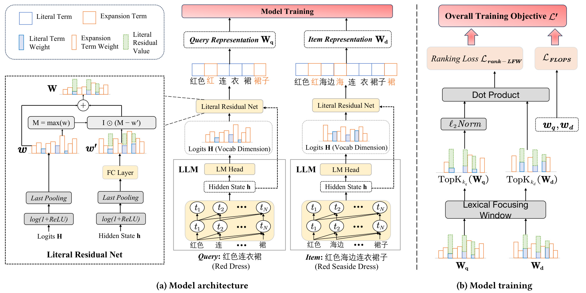
原图两边用同一词表色块解释查询和商品编码，蓝框指输入里已经出现的词，浅色框指由语言模型输出的扩展。左边还原两支路如何分工，语言模型头的 logits 和隐藏层分别经非负压缩、末位读取，隐藏态再到全连接投影。最大基础权重与增强输出相减后，只沿蓝色词所对应的掩码坐标加回，因此图里的红裙查询就算没显式包含完整商品写法，红色、裙子等原词可保持分量，海边等扩展或商品特有属性还有位置。查询和商品以各自文本确定掩码和量级，不能读成从同一条文本复制出来的权重。右半边把两侧合成表示先经过聚焦窗口，点积前只在查询臂做归一化，旁路的基础词权却直接交给软稀疏正则。因此图里的排名损失可以对残差学习提供梯度，正则承担的是塑造基础词表分布。这个区别在检查索引变大时很实用，若合成结果新增的是调整后的原词，应审查掩码和补偿幅度，若大量非字面维度持续激活，应先检查基础权重的软稀疏训练。两张子图本身给的是结构跟踪，不能从配对图例判定特定商品召回正确。右侧窗口也要与线上查询保留十六词区分，二者面对的分别是学习初期的高维竞争与服务时的倒排匹配预算。部署图没有做这一训练操作，是因为已生成的商品词权会存入离线索引。用并列方框读这张图时，尤其注意查询和商品的词权生成先互相隔离，只有匹配函数看到双方，不会在查询端将候选商品逐条输入语言模型重新处理。这个结构使得商品可预计算，也解释了为什么正负样本的监督在训练损失处汇合。
同一模型另外做两种补偿设计提供了更直接的参照。若把 $w'$ 换为基础词权 $w$，每个原词被调整到同一个最大值，削掉了原词之间在语境上的分辨力。若用 $I\odot w'$ 直接加回，支路自己需要学习绝对尺度，模型没有现成的当前输入强激活锚点。论文给出的双侧使用配置强于这两项。这个对照也帮助明确其作用，补偿是特定坐标的一次投影后的分数调整，和输出多个文本改写再各自召回存在不同的成本形态。前者仍是一条倒排查询，其中某个维度只对应一个词表坐标。假定多词品牌被切开，无论多个词权有多大，这个点积也没有自动获得字符串连贯性或属性共现的布尔保证。
2.2 聚焦窗口和非对称排序目标
字面残差保住有限原词，其余大词表坐标仍有机会活跃。论文在合成表示进入相似度前安排条件 Top-K，查询与商品使用不同上限。它面向训练最早期，等到自然非零坐标数低于窗口，运算等同透传。论文还试了人为随阶段缩小窗口的版本，未胜过最佳固定窗口。这个结果与条件窗能自动逐渐退出一致，不要求把在线查询的服务宽度搬进训练。
符号解释：$\lVert W\rVert_0$ 是非零词项数，$k$ 是当前一侧的词项上限，$\operatorname{TopK}(W,k)$ 保留数值最大的 $k$ 个词权，其他坐标置零。大于阈值时限制参与排名的词项，允许更强的候选先竞争。达到阈值后不再做掩码裁减，软稀疏仍随训练推进。该定义按数值排序，不提供特殊品牌保留配额，输入词明明有权重却不入窗也有可能。小窗口在同样条件下若明显损失深层命中，要再测被截断的原词与扩展词构成，不能把更多非零项一概理解为噪声。
符号解释：$W_q$、$W_d$ 分别是查询和商品的残差后表示，$k_q$ 与 $k_d$ 是两侧上限，分母是截断后查询的二范数，点积只叠加两侧共享的词坐标。查询侧的归一化造成区分词与常用词竞争同一个范数预算，商品转而以可服务多类查询的属性向量参与评分。对非零的固定查询，其分母对该请求内所有候选相同，单路精确点积排序便不会因统一缩放改变。训练阶段分母影响梯度和 logits 温度，此外在多通道分数合并时绝对尺度也可能有影响，所以对照所测出的大部分排序差异应绑定到训练后的表示与分布。论文未给零范数保护代码，复现需明确空输入、停用词全零与回退召回。
符号解释：$q_i$ 是批次里的查询，$d_i^+$ 是对应正商品，$d_{i,j}^{-}$ 是来自其他查询的批内负商品，$\mathcal L_{\mathrm{rank-LFW}}$ 是评估正商品分数相对全部分母候选的交叉熵。分母让重复出现但无法区分正确品类的共享词在正负都高时难以单独优化，给匹配车型、功能等坐标提供学习空间。另一条查询的点击商品也可能适合当前查询，批内负样本由此带有潜在假负例。该式没有复用原文作为背景介绍的显式 BM25 难负项，不能把基线公式（2）分母中的独立难负样本搬到 PROSPER 式（12）。
符号解释：$x$ 指查询侧或商品侧，$V$ 为词表，$N$ 为该侧批大小，$w_v^{(x_m)}$ 表示样本 $m$ 的基础词权，两个 $\lambda$ 控制对应侧的正则权重。式（3）的正则惩罚一个词在批内广泛出现且权重高，避免少数热门扩展形成过长索引列表，同时比直接把每条的所有活跃维度都线性惩罚更偏向平衡批内词分布。式（13）在主损失上加入两边软正则，排名使用投影后的 $W$，正则使用残差前的 $w$。正则名字中的 FLOPS 指近似匹配操作的学习信号，不能直接拿它推算整网训练浮点操作数。正则约束强弱、硬窗、最终词表分片和匹配算法都在不同程度上影响上线资源。
2.3 从稀疏表示到线上混合召回
线上把离线编码的商品权重按词组织为倒排表，获得查询侧加权词后只访问这些词命中的商品列表，用 Block-Max MaxScore 的上界判别降低候选评分量。一般而言，上界是否能够安全跳过某个块取决于存储分数与剪枝实现的契约，本文给的是业务检索的匹配做法，没有公开零权重、负权重和并列分数的具体实现，也没有以剪枝算法准确性作为模型贡献。原文使用预计算的高质量商品和用户查询，索引商品权重可以脱离请求周期重建。作者线上限制查询只取十六个最高权重词，与实验最佳训练聚焦窗相差一个数量级以上。原词保真效果是否在服务截断后保留，需要观察词权分布与最终召回，而不是只检查模型前向是否产生了某个原词。
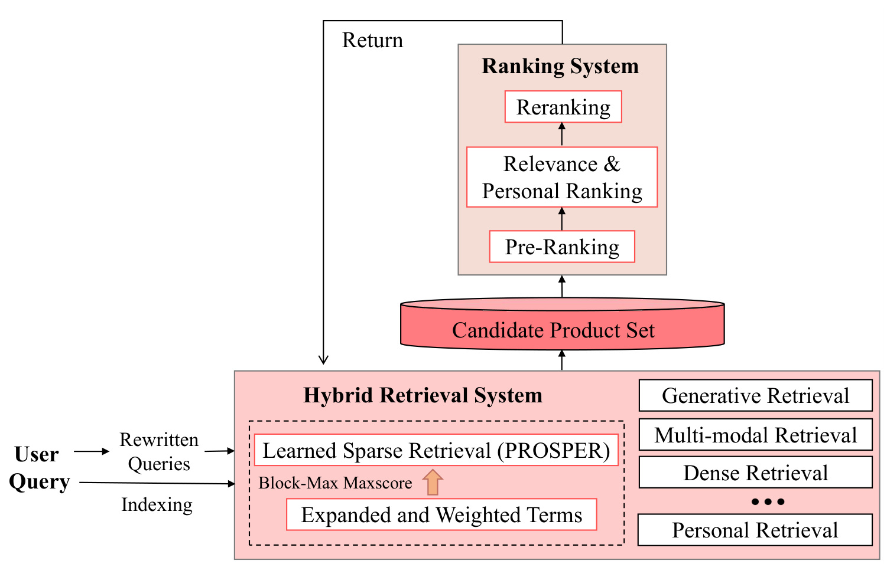
图里从一侧的用户查询开始，改写后的查询输入混合召回，中间以扩展加权词和索引进入学习型稀疏检索框，框下标注 Block-Max MaxScore。右侧生成式、多模态、稠密和个性化召回是各自的并行工作，学习稀疏增加可用候选的一路，各路产生的候选在候选集合汇合，再上行穿过预排序、相关性与个性排序、重排，最终返回结果。架构中稀疏路输出在早期，若某个需要品牌匹配的候选已经被其他路拿到，新增通道可能只增加重复项。若系统对迟到通道有时间预算，词项匹配待到超时也无法贡献候选。后续排序依旧能够纠正残差通道的误匹配，也可能把它新增的相关商品挤到用户看不到的位置。沿图中路径追踪，应把独有候选、去重后保留、进入精排、最终曝光分开计数，才能读通离线改进如何传到 GMV。原文把两路并行的时延作为可部署条件，图中的平行支路不会把耗时逐项串加，聚合仍可能受最慢的等待路、并发负载和排序池大小影响。预计算覆盖未命中后的回退与索引刷新策略，图中也没有给出。图上商品向量的入索引方向与查询的实时方向不同，因此这两条路径提速能改善的资源也不同。缩短商品侧编码主要缓解导入与刷新，缩短查询计算才直接改善未命中预编码时的请求链路。倒排扫描优化主要发生在得到权重后，能降低匹配相关负载。观察线上收益时应给新增路的限量阶段设固定配额，否则更多候选进入预排序的数量变化会与词项模型本身一起影响实验。
这个拓扑使架构细节决定了实验的反事实。作者更换了生产中用的骨干大小，用一个新增稀疏召回通道和线上原有多路系统做对照，因此被检验的是全路径上的可用候选增量。并行拓扑下索引存储和匹配毫秒数可以单列，用于确定服务承载约束。端到端业务指标还叠加去重和精排，不能归属于某条原词残差。实验章用无 LRN、单侧 LRN、移除窗口和相似度变更分别测组件，这些与新增路的整包实验作用在不同分母。还要注意线上点积式词权使用一个排序分数，业务指标统计的是一次查询后的用户及商品发生的事件，两种指标间不存在固定的换算系数。
3. 实验结果
3.1 两套离线数据和主结果
公开 Multi-CPR 电商子集包含超过一百万篇商品相关文本，训练十万查询文档对，测试一千个查询，报告 Hit@1、10、100、1000。另一套从真实点击日志抽样，样本来自约 107 万查询商品对，训练用 27 万对，测试用一千个查询及其点击集合，每个查询有一至十个点击相关商品。该集合报告 MRR@10、Recall@10、100 和 1000。前者的多级 Hit 逐条确认是否至少命中目标，后者的 Recall 按点击相关项计覆盖。工业点击地面真值是在既有策略产生曝光后观测的部分反馈，不能把全部未点击商品都当作相同强度的真负样本。离线样本和后文线上以亿规模训练与构图的样本是两套口径。
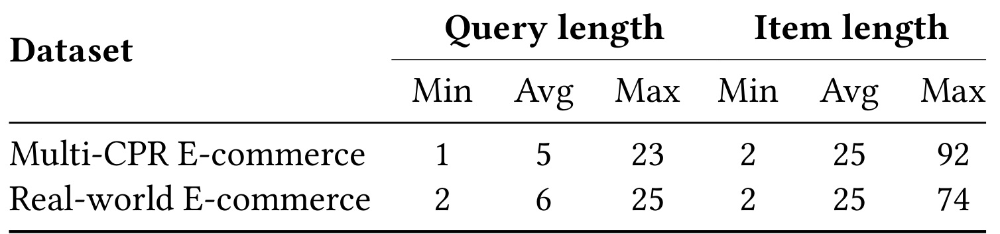
表里按查询和商品占两组列，每组列出最短、平均和最长长度。用 Qwen2.5 分词器时，公开集查询为一至二十三词、均值五，商品为二至九十二词、均值二十五。真实日志查询为二至二十五词、均值六，商品为二至七十四词、均值同样二十五。表格没有把词表大小作为文本长度，也没有把模型生成的扩展词计进原长度。它给出了一个具体结构条件：每搜一条查询，少数词经常同时传递品类与属性；商品可能带更多上下文，在不同查询下有不同片段应该得到匹配。模型训练将商品窗开得更宽与这种差异相符，却不能根据均值推出两侧的最佳窗。商品最大七十四或九十二也不是线上序列断长，线上七八千万商品换用更小的骨干，且检索词权可能包含扩展。若自有平台标题常常更短，或者查询中存在大量超长改写，更可靠的做法是重新估计双侧分布，并按查询长度、扩展量与标题属性数画效果和服务代价曲线。表中的最小、平均和最大值不能反推出分位、复杂型号比例或不同频次流量的覆盖率。
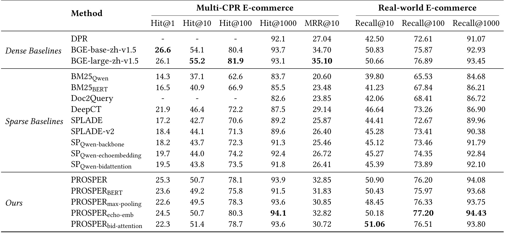
左半组四列关注公开集首个命中出现在哪一个候选深度，右半组是对真实日志多个目标的召回和首个相关商品的倒数排名。按左侧第一和最后一列比较，PROSPER 给出 25.3 和 93.9%，基础 Qwen SPLADE 为 18.2 和 91.3%。对应差异是 7.1 和 2.6 个百分点，固定骨干之后更明显的改善出现在较前位置，但完整方法还改了池化、稀疏控制和归一化。左侧 50.7 对 43.7、78.1 对 72.3 也说明收益并不限于单一截断。替换为 BERT 的方法仍比 SPLADE-v2 更强，Hit@10 是 49.2 对 44.1，Hit@1000 是 91.5 对 89.6，给出结构超出单一骨干的证据。公开集强稠密 BGE-base 在前三列为 26.6、54.1、80.4，均高于 PROSPER 的 25.3、50.7、78.1，Hit@1000 则略低于 93.9，测得 93.7。论文正文额外报告 Qwen3-Embedding-4B 能达到 94.9，超出两行。因此商品稀疏召回的结论是具备互补性和竞争力，哪一路贡献更多合格候选要按实际深度与候选交集看。
右半组里，PROSPER MRR@10 为 32.85%，高于其余稀疏基线，低于 BGE-large 的 35.10，Recall@1000 则为 94.08%，高于该稠密模型的 93.45。排序变体也有几个反例，最大池化在公开 Hit@100 给出 78.3，比默认 78.1 高，但真实日志 MRR@10 降到 30.85。输入重复版本公开 Hit@1000 94.1，真实日志 Recall@1000 94.43，都是这里较深的较高读数，且序列长度翻倍，不能在相同编码代价下判其更优。双向变体在真实日志 Recall@10 有 51.06，高于默认 50.90，但 MRR@10 和 Recall@1000 未同步改善。复现可使用左右列各自的数据集定义，并报告置信区间和去重后的新候选覆盖。微小差值是否超过不同训练种子的波动，表内没有方差或显著性检验。读表时应把同一候选列内不同系统的差额视为这套标签和检索库的即时报表，把深度变化视为每条路覆盖更多候选时的形态。两者对上线配额的含义不同。如果召回后可以再从千级缩到百级，深位的增量值得做留存分析；如果只能给新增路极小配额，十位指标和原有召回重叠比千位第一更贴近链路限制。
3.2 残差与聚焦窗口的消融
作者把字面权重结构和训练早期稀疏化分别拆开。Fig. 2 中无 LRN 是观察补偿有无的参照，单侧 LRN 显示查询和商品分别能做何种改变。Table 4 拆的是固定窗大小、动态窗和完全去除窗，底层软项仍承担其余稀疏约束。两处去除并不代表调整了同一个超参数。
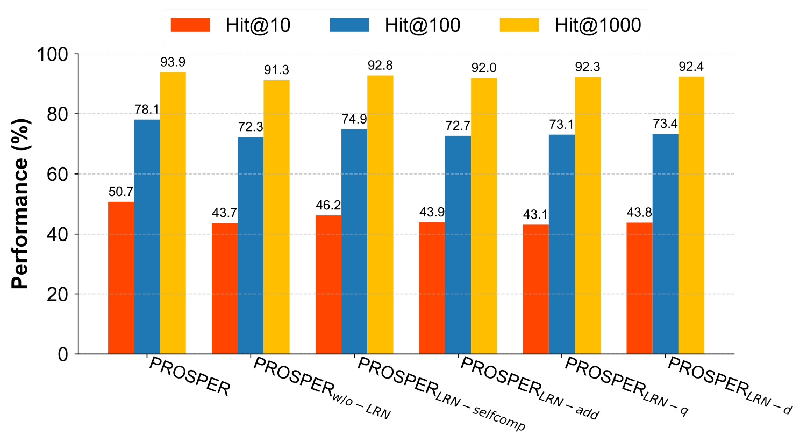
图以三种颜色分别标注十、一百、一千位命中率，每组三根柱属于一种方法。完整模型为 50.7、78.1、93.9%，无残差是 43.7、72.3、91.3%，对应 7.0、5.8、2.6 个百分点。单查询臂的 43.1、73.1、92.3 与单商品臂的 43.8、73.4、92.4，在较深两个位置接近。查询单臂浅位反而低于无残差的 43.7，原文单侧都改善的表述应理解为总体和深位变化，不是每个单元格都提高。把原词强制拉到同一最大值的自补偿达到 46.2、74.9、92.8，比直接增量 43.9、72.7、92.0 好，在三档又都低于完整互补补偿。这个结果符合最大激活参考与保留原词差异可能共同起作用，但此图不足以测量两个改动对应的独立因果大小。不同结构同时改变更新幅度和训练梯度，重跑时可记录字面词被加成、保持和削弱的比例，再按品牌与型号查询看哪部分变化最一致。柱图前三种截断来自同一公共测试的候选序列，深位更靠近天花板，自然留给上涨的空间较少。浅位差异较大具有业务意义，也不能按同一倍数扩展到每一种型号或商家。要识别单侧增量，需将候选事先按原词是否落在商品标题的可匹配坐标切开，再核对两边的补偿经过点积后的真实变动。
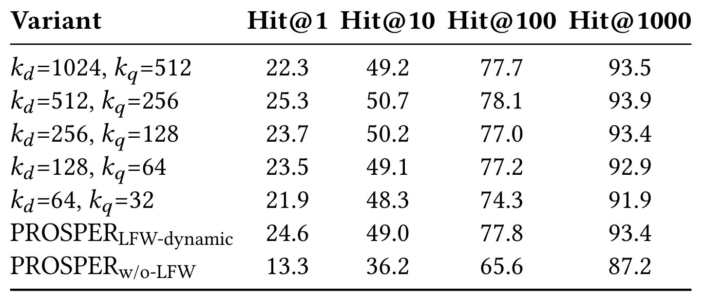
固定窗从查询三十二与商品六十四，到查询五百一十二与商品一千零二十四，共列五组。最佳的是查询二百五十六、商品五百一十二，四档命中为 25.3、50.7、78.1、93.9%。最后一行关掉窗口后是 13.3、36.2、65.6、87.2%，在最浅位置减少十二个百分点，在最深位置减少六点七个百分点。采用逐阶段收窄的一行是 24.6、49.0、77.8、93.4，接近但低于最佳固定窗。将固定窗扩大一倍也没有继续提高，相反四项指标都下降；窗口往最小缩时最深命中下降到 91.9。五组固定窗一直保持商品窗为查询窗两倍，不能读表得出该倍率本身最优，尚缺固定查询窗后对商品宽度独立搜索的证据。由于数据上的原输入词数远小于最佳窗口宽度，窗口约束的是扩展激活加上字面词后的稀疏支持，而不是截断商品标题。最终部署只查询十六个词项，决定的是实际访问哪些倒排列表，不能使用表中二百五十六对五百一十二的最优性替代十六词截断的质量验证。表格中动态窗的最优困难还可能与选定缩短日程或学习率相关，作者试过的调度不足以排除其他动态策略。另一个容易被忽略的细节是商品与查询的窗都来自数值 Top-K。若低频但关键的词因为初始化落在窗口外，对它的直接排名梯度会变弱，随后其他词可能占住位置。窗口过窄对最深命中的负面方向与这个风险一致，但表没有展示原词被截断比例，不能确认下降具体归谁。实际复现应在相同软正则和优化步数下记录词项进入窗口的变化，否则初始模型、预算配比和训练长度相互混杂。
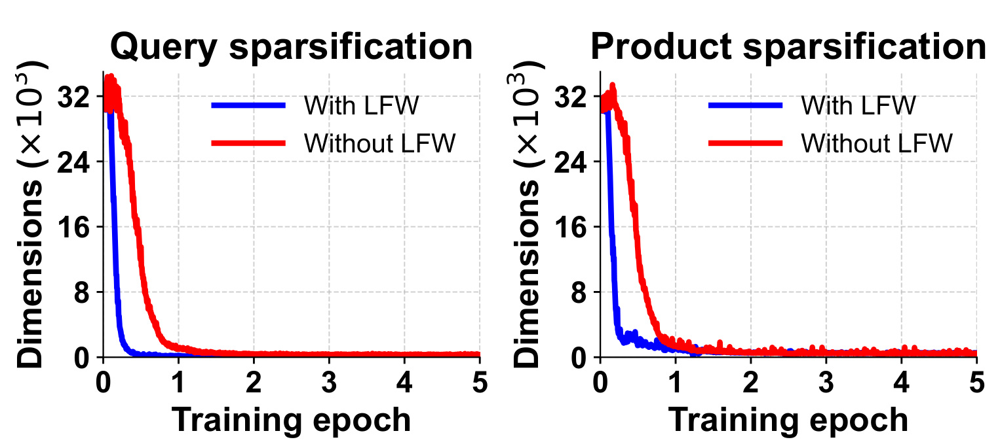
横轴为训练轮次，纵轴单位是千个活跃坐标，左右图对应查询与商品，红线是无窗、蓝线是有窗。两侧初始都在三万左右到三万以上，蓝线更快下到接近底部的范围。查询向零附近收得早，商品蓝线下探之后在第一轮周围还有波动，无窗商品的下降过程更缓，后面与蓝线接近。这些线给出窗口早期改变表示分配的时序证据，末期接近时表格中的命中优势仍在，因此最终稀疏度相近并不能从中推得匹配质量相同。纵轴记录数量而没有列出具体坐标。线的低位置也无法分辨正负、热门词和稀有词被保留各多少，复现可同时跟踪去除残差前后的支持和词频分层，并记录哪一时段多数样本已低于窗宽。图以训练轮为单位，没有时间和硬件统计，不能说蓝线达到低维度更快就等于训练秒数以同样倍数下降。两条横轴虽都是训练轮次，也无法直接确定学习信号生效的精确步长。工程监控可以分别报告截断前、截断后及最终写入倒排的支持，避免只观察一种维度数。
3.3 字面、扩展与归一化
把最高权重词显示出来能确认模型是否按任务意图调整过表示，也要通过遮掉一类词、继续比较检索结果来限制解读。下表是作者为诊断挑选的具体例子，和后面多查询的评价形成互补。
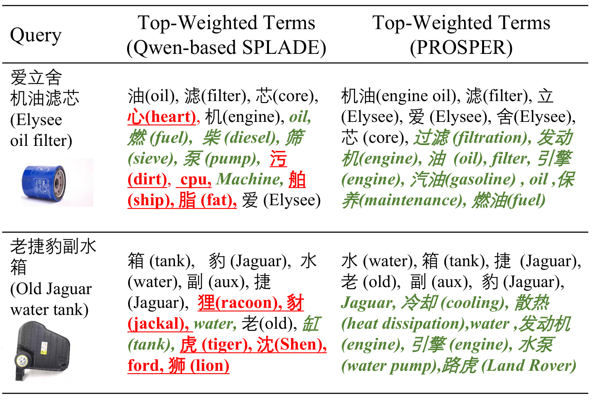
每行先给查询及其商品缩图，中列是 Qwen 基线，右列是完整方法，词按权重下降排列，绿色斜体是作者指定的有用扩展，红色下划线是噪声，黑色是原词。爱立舍机油滤芯一行，基线头部聚集油、滤、芯、机等普通品类片段，爱直到这一段末部才出现；完整配置把立、爱、舍几个片段移到更靠前的位置，发动机、过滤和保养等仍能扩展。老捷豹副水箱一行，基线把狸、豺、虎、狮等动物词拉入权重靠前部分。新模型突出水、箱、捷、老、副、豹且扩展冷却、散热、发动机、水泵等词，展示按汽车含义展开的侧重。右列仍列有路虎等品牌相关词，无法由这个列表断言一定是有效兼容关系。字符拆分也表明蓝图中的原词掩码是分词器坐标，不是对车型整体施加精确匹配谓词。案例的产物是词权而非商品全排序，两个例子用于发现失误模式，无法估计该失误在全量查询发生的频度。建议用相同标注规则跟踪原词碎片、完整实体、同类跨品牌和正确替代件，分清词项级改善会在哪一步转换为真正相关候选。
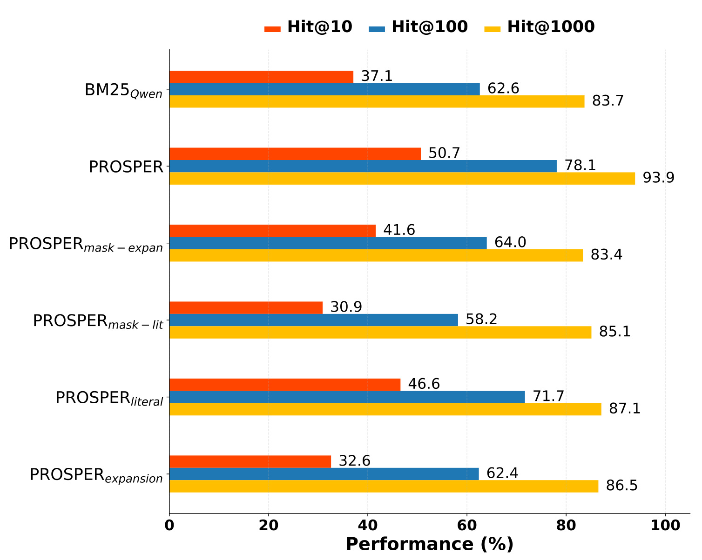
图以长短三档柱并排比较两个不同干预。训练时仅用原词的一行，Hit@10 为 46.6%，超过 Qwen 分词 BM25 的 37.1%，两者相差 9.5 个百分点。同样单侧训练但只用扩展，可看到浅位仅 32.6，深位 86.5 接近原词模型的 87.1。另两行先以完整模型训练，再在评估时屏蔽字面或扩展坐标。屏蔽字面后浅位 30.9，低于屏蔽扩展的 41.6，但最深位置为 85.1，高于后者 83.4。于是原词的贡献更集中在前部，训练后扩展会补齐一批原词不易命中的较深目标。完整模型 50.7、78.1、93.9 三档都领先四个公开变体。表中单类训练可以重分配全部词权梯度，推理遮罩测试的是在一个已经学到互补策略的模型里拿走一路，两组不应相减计算两类信号的算术贡献。它们还会把词权相似的样本推向不同的名次，所以命中不是两条子路径命中率的简单相加。遮罩也会改变活跃词数和分数尺度，若要拆联合效果，应补出同一查询上两个通道独有命中的交集，在同候选总预算下比较融合后的去重结果。
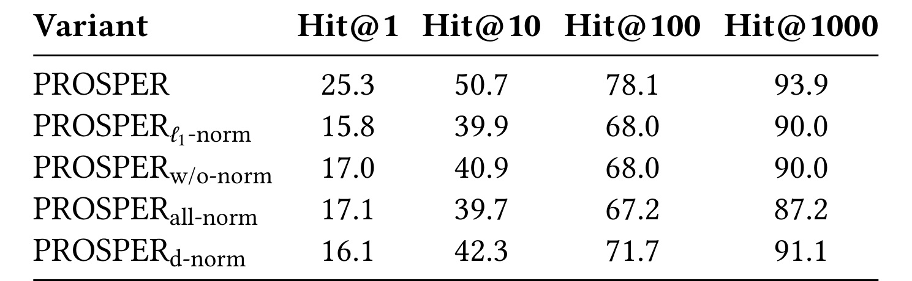
最佳行是查询侧二范数，给出 25.3、50.7、78.1、93.9%。仅查询一范数最深为 90.0，与完全不归一化等值，浅位则为 15.8 和 17.0。商品侧独做二范数比前两种更好，最深 91.1，但仍落后默认；查询商品都归一化等价余弦时最深只有 87.2。作者把它解释为商品不同属性服务不同查询，共享范数会让当前不参与匹配的属性挤压真正命中的权重。这个解释对应分母的位置，对于固定查询，除以它自己的常数并不会重排任意两候选。训练每批查询分母却不同，正负标准化相似度参与网络优化后会改变词权本身。两个归一化方案的表内差值因此应绑定各自训练过程中学出的表示，同时考虑检索时跨商品范数。只有同一 checkpoint 冻结后独立切换评分，才能进一步拆出检索阶段的直接影响。由于这里没有相同权重的后验切换对照，也不能指定一个新商品域里的余弦精度必将比查询侧归一低六点七百分点。可以补用属性数量分桶，观察文本略长的商品是否在双侧归一化下掉得更重。
3.4 检索效率、骨干容量与线上验证
效率需要区分图上用于学习的匹配量、固定语料检索时间和生产部署的通道时间。离线和线上模型、索引、硬件、并发表现不同，比较同一场景的基准才有意义。论文分别给了两类口径。
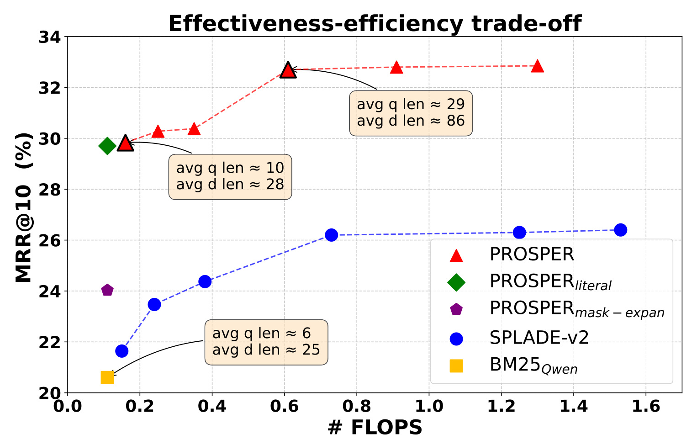
横轴是作者定义的平均查询与商品重叠词数，记作 # FLOPS，纵轴按原图 MRR@10 标注。PROSPER 红线由接近三十上升到约三十三，横轴从零点几到一点多时先上行再较早变平。标注框里，靠近低匹配预算点的平均查询和文档活跃词数约十、二十八，较高点约二十九、八十六。两侧都多出不少词，平均重叠仍远小于活跃词数，因为二者只有一小部分同坐标。SPLADE-v2 蓝线在同类重叠范围内低于红线，字面模型与屏蔽扩展的单点在相近计算代理下都高于 BM25。上限超过一点二后对最终 MRR 只带来少量变化，使用最大活跃词数在服务里可能只增加索引和查询开销。这个代理按多少共享项估计匹配工作量，实际倒排成本还取决于活跃词的倒排表长度、上界剪枝、缓存、本机和网络访问。它也没有覆盖大模型编码时间、并发或延迟分位。原图标作 Multi-CPR 而 Table 3 的公开集列采用 Hit，右侧工业集才列 MRR，不能把曲线上的近似数当作主表某一行的正式读数，更不能从其斜率推断线上毫秒变化。线内不同点是匹配预算调节得到的多个设定，横向离得近的不同方法实际也可能处理不同高频词。在相同重叠计数附近，常见词的列表比型号词更长，这就是为什么可增加平均倒排表长度、跳过块数和遇到的热门词比例作为二级代价指标。论文图本身足以看到预算提高后质量趋平，距离线上延迟仍隔着运行时实现。
同一百万量级 Multi-CPR 中，作者另报告 PROSPER 约 1.5 GB 索引，BERT 稠密约 3 GB，LLM 稠密约 8 GB。作者说一千查询的稀疏匹配不到一分钟、Faiss 稠密超过三分钟，这个结果依赖协议中的搜索实现和条件，缺少固定同精度、硬件匹配的充分成本披露。线上则用成熟多年的 ANN，在同节列出的实际顺序相反。
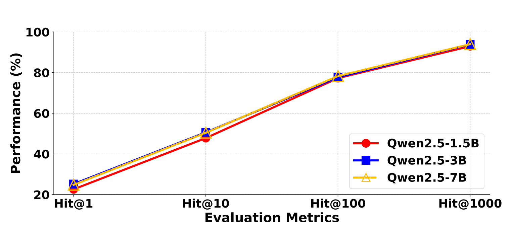
横轴是 Hit@1、10、100、1000 四种离散指标，纵轴是百分比，三条线分别是 Qwen2.5 1.5B、3B 和 7B。所有模型从浅位向最深位走势一起上升，这是提高命中截断得到更大候选池的直接表现，不是随着训练推进的学习曲线。三个模型确实有差别，1.5B 在第一及第十位相对低一些，到百和千位时相距较小。七十亿模型相对三十亿和十五亿没有拉出明显的整体领先幅度，因此单纯加深骨干不是这一任务最划算的成本去向。图中没有标可精确读出的小数或误差条，作者的“没有显著收益”应理解为观察变化有限，没有给统计显著性阈值。选 1.5B 还基于已有系统索引和推理预算，不能按 3B 离线结果直接代入同一线上模型。若项目要验证模型规模，需和十六词截断做交叉实验，检查小模型在极短型号查询上的浅位损失是否能靠残差收回，而不是只看深位的几条线重叠。用每种骨干一致的候选过滤、文档索引和查询预计算策略，才能把多花的推理资源与实际召回增量联系起来。
论文生产训练使用 2025 年 7 月约 3.3 亿条点击，一轮一过。按原文约八千万商品和一亿七千万查询预编码，线上只取权重最高的十六词。处理桶约占总流量百分之一，连续运行一月，与缺少该路的其余同配置系统比较。报告使用 CUPED，并称排序、广告和推荐环节的监控未见负面影响，原文没有列出全部护栏表或置信区间。
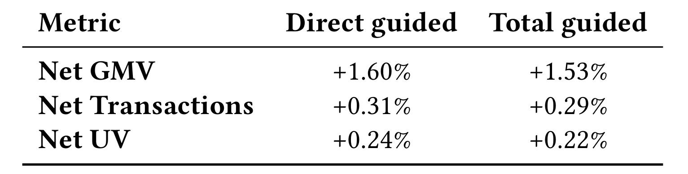
三行分别是净商品交易额、净成交和净独立访客。左侧直接引导指标跟紧搜索后的购买，右侧总引导还包括直播、广告等渠道。可见直接与总引导的 GMV 分别上升 1.60% 和 1.53%，成交上升 0.31% 和 0.29%，UV 上升 0.24% 和 0.22%。这些是相对基线变化，不能从 table 反推业务量，也不能把两类归因列相加。正文另报 CVR +0.36%，没有像表中一样分别给两种归因的列。GMV 拉动大于成交和 UV，可以是新增流量构成、商品价格、渠道归因集中或噪声，缺少订单价值、落地商品和用户面板无法判断谁贡献更大。没有用户数、分流单位、置信区间、原始基线或精确随机化日期，也不能写成已独立验证的显著性。对照是多通道系统有无 PROSPER，业务改善属于完整加路，在离线消融里需要另行判断的 LRN、窗口、归一化都随整体部署。作者定性检查独有候选，先由生产相关模型评估再给领域人员审核，第九页没有给抽样总数、可用比例和定量评分。因而这两种证据可以组成候选确有互补的假说，尚无法从所给数据量化加路到成交的每个中间转化环节。
线上该路在八千万商品下索引 93 GB，对比稠密通道 152 GB。匹配约 20 毫秒，稠密通道约 10 毫秒，作者解释其 ANN 经长期专门优化。即使匹配并行，聚合仍看最慢路与超时策略，故较小索引和线上较慢匹配可以同时为真。若报告端到端推理效果，还需测查询是否命中预编码、触发模型编码的比例、请求尾分位、索引热冷负载、候选池膨胀对排序的处理时长。这些数值在原文未披露，不能用离线 Faiss 时间推导成线上性能改善。
4. 总结
4.1 最能迁移的三项区分
商品搜索里，原词权重是一项能顺着倒排分数解释的中间变量。想检验语义扩展能否补召回，可以比较同一查询的原词、合成权重和扩展的独有相关文档。仅看词表激活的整体稀疏度会丢掉关键证据。例如表内原词模型在十位明显好于扩展模型，付出若干深层精度以去除扩展却未必非黑即白。用原词掩码做定向补偿可以把两类信号放进同一词表，同时给相似词的召回腾出通道。下游排序也要参与验证，独有候选要一直追踪到去重、排序采纳和展示，才能判断新信号是降低已有错配，还是单纯增加路数。
训练与服务应该使用分离预算。训练窗要跨过初期的大词表激活，并给关键原词和扩展留下梯度通路，最终服务窗要控制查询要扫描的倒排规模。按照实验的固定窗口选择二百五十六个查询特征，与上线只使用十六个词之间的保真损失必须分别量化。无窗轨迹在最终也接近稀疏并不能追平检索分数，反映起步词项竞争影响网络把权重放在哪里。上线限制应与可用 QPS、稀有查询超时和候选质量联合分析，避免把训练收敛状态当作线上吞吐指标。
比较稠密召回时，建议按候选深度和已有渠道重合评估。PROSPER 在公开集的 Hit@1000 有竞争力，BGE 在浅位仍高，线上稠密通道的成熟匹配更快。本研究的现实价值在于额外覆盖有字面约束的商品，并有可追查的匹配原因。跨业务复现时若已经有很强的品牌、型号或实体匹配，学习通道的增量可能集中在别名、错拼和标题缺词；若稠密侧正负邻居国别语义差异很大，同样的余量不一定存在。候选表应同时呈现相同池大小时的独有命中、错误型号侵入率和稠密作为基础后的增量效果。
4.2 局限与后续跟进
第一，字面补偿以分词坐标调整权重，拆词、同形异义和拼写错误都会改变掩码。某个型号若必须作为整体出现，需要后续约束或额外特征，这篇论文给的数学结构不会保证它。第二，论文同时改变骨干、池化、原词补偿、窗宽和归一化，消融显示局部有效，缺少用于估计全部交互效应的同预算因子设计。第三，真实日志点击不可避免受旧召回和展示影响，跨目录、其他语言和长文本商品没有对照。第四，生产比较的原始数据规模、流量分配随机化单位、置信区间和精确 p 值未给出，数值由作者实验支持，外部无法再做推断。第五，索引较小与匹配较慢同时存在，商品和查询预编码刷新成本与长尾 miss 链路未给出，不能用区间内均值判断扩量后的尾部。
如果要复现，首先在公开集用同一分词器、骨干和样本组，固定候选深度，记录无窗、无残差、原词与扩展遮罩的差分，并复跑不同种子。把词权按品牌完整实体、型号片段、通用类目分组，能看出改动是否符合原始意图，其后再决定需不需要额外类别感知。第二，把训练后的同一权重分别用八、十六、三十二个查询词评估，固定商品索引，跟踪倒排遍历、独有召回、错误属性、P50 和 P99。这组对照能检验在线预算压缩损失，减少对跨场景毫秒数的误比。最后进行多路融合消融，固定去重、候选数与下游排序，独立记录独有命中最终曝光、分流单位、业务相对差、区间和精排耗时。只有对照系明确，才能判断增加哪一段词项容量最能为现有商业检索栈提供增量。